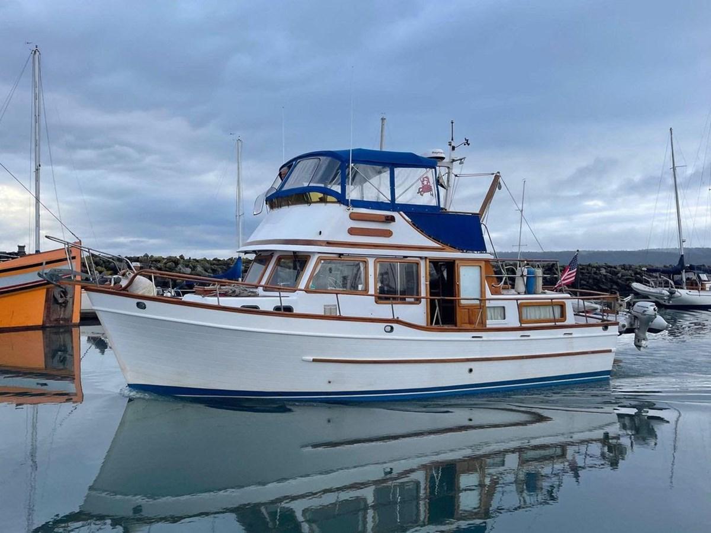

B-Atlas Boat Guide · UNIV-36-TR
Universal 36 Tri-Cabin Trawler Tri-Cabin
1977–1981
The Universal 36 Trawler is a Taiwan-built traditional trawler associated with Universal Marine. Surviving examples emphasize teak interiors, displacement-speed diesel operation and conventional cruising layouts, but model naming and standard specifications are not consistently documented.

- Length
- 36 ft
- Beam
- 12.67 ft
- Draft
- 3.83 ft
- Hull behaviour
- Semi-Displacement
- Fuel
- Diesel
- Propulsion
- Shaft
- Engine configuration
- Single Ford Lehman diesel commonly documented
- Boat family
- Trawler
- Construction
- Fiberglass
Best for
- Buyers comfortable researching a low-volume Taiwan trawler
- Couples seeking classic wood-rich cruising accommodations
- Slow inland and coastal cruising
Trade-offs
- Low-volume documentation makes model verification important
- Exterior wood, tanks and systems may require substantial restoration
- Performance is displacement-speed and individual machinery varies
Known concerns
- No model-specific concern has been promoted to B-Atlas’s evidence threshold. This does not mean the model has no age-, condition- or hull-specific risks.
Inspection focus
- Confirm builder plate, HIN, exact model and year
- Inspect decks, windows and exterior teak for moisture and prior repairs
- Inspect tanks, wiring, plumbing and sanitation systems
- Inspect engine, cooling, exhaust, shaft, rudder and keel
- Verify actual tankage, displacement and air draft
Continue researching
Related boat models
Universal 40 Europa Europa Trawler
40 ft · Semi-Displacement
Endeavour TrawlerCat 36 Power Catamaran
36 ft · Catamaran
Island Gypsy 36 Classic Classic
36 ft · Semi-Displacement
Marine Trader 36 Double Cabin Double Cabin
36 ft · Semi-Displacement
Monk 36 Trawler Aft Cabin Trawler
36 ft · Semi-Displacement
Willard Vega 36 Standard Cruiser Flybridge Sedan
36 ft · Displacement
About this record
B-Atlas preserves uncertainty: missing information remains unknown rather than being treated as a negative. Specifications and guidance describe the model record; individual boats can differ by year, equipment, refit and condition.